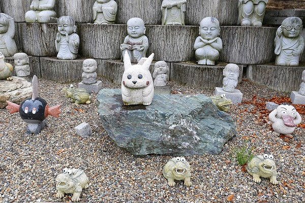
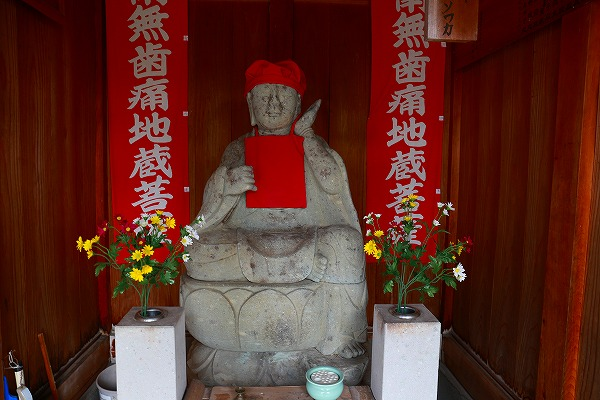

以前、福井県に変わったお寺があるという記事を見たので、行ってみることにしたよ。
場所は福井県越前市。
越前市というとピンと来ないが（えっ、俺だけ？！）とどのつまり以前の武生市だ。
武生と言えば刃物の街として有名だが、個人的にはやけに大仏の多い土地という印象がある。
のっけから余談で申し訳ないが、武生には三大仏と呼ばれる大仏があるのだが、それぞれが石、鉄、木で出来ている。
古くから金属加工が盛んな土地なので全部金属製なのかと思えばそうでもない。つまり様々な伝統工芸に精通している御土地柄なのだ。
さらに武生近郊にも幾つか大仏があり、実は今回も近くの池田町にある寺谷大仏を見るついでに武生に寄った次第なのである。
そんな武生の町はずれにこの宝円寺はある。
いきなり入口からしてこんな感じ。
悪く言えばグチャグチャ、良く言えばゴチャゴチャ、そんなところです…。
立て看板が妙に多いなあ。
重量級のインパクトを誇る山門。
赤い提灯や赤い防火バケツはともかく、天狗の面が左右に取り付けられて、まるでセカンド仁王様のごとし。
うむー。二層の凄く立派な山門で、本来であれば上階に何があるのか気になるところなのだが、ココの場合、天狗の面にしか目がいきませぬ…。
ちなみに上階には登れないようになってました。
仁王様も草鞋だらけでよく見えません。
鬼が嵌ってる草鞋なんてあるんだ。
本堂に至るまでに様々なアイデア満載のギミックが仕掛けてあり、油断ならない。
こちらはマニ車。
円筒状の筒に書かれたお経を回すことによって功徳を得ようというもの。
十三仏堂内にはお経読み上げマシンが。
賽銭を投入するとお経が流れるのだが、隣に一円玉が置いてある親切設計。
だったら最初からお賽銭要らないじゃん、とか言うなかれ。
心あるものはちゃあんと自腹でお支払いするのだよ。
撫仏こと御賓頭盧様。
裾が割れている部分を見る限り石像のよう。
通常、御賓頭盧様は撫でられることを前提とされているので撫で心地の良い赤漆仕上げが多い。
この御賓頭盧様も赤くてツヤツヤしてはいるがいかんせん石にペンキ塗りなので肌触りがチョット微妙…。
眼のペイント…。
境内のカオスっぷりに圧倒されつつ看板の案内に促されるまま奥へ奥へと。
それにしても看板の多いお寺だこと。
山門と本堂の間には袖堂があり、カエルの石像がずらりと並んでいた。
まあ、よく揃えたものだ。
何やら山門の左側に色々とありそうな感じなので、一旦門の外に出て左へ左へと移動してみる。
まずはこどもすこやか虐待防止地蔵。
頭をなでなでして下さい、とある。
お地蔵さんの両サイドには玩具がたくさん奉納されている。
エガちゃん…ではないよね？…
特にペコちゃんが多く、ちょっとしたペコちゃん博物館みたいになっちゃっている。
永代供養塔には大きな石仏。
池の畔にも大きな観音様
さらに現れる観音様の足元にはチビッ子石仏が並んでいるぞ。
小坊主なのだろうか？キュートなものからそうでないものまで様々な石像が並んでいる。
となりにはわらべ滝とある壁が。
何かの折には水が流れるのだろうな。

恐らくお寺さんとしては参拝者を楽しませようと色々な石像を並べてみたのだろうなあ。
その思いは痛いほど判ります、判りますよ。
十二支守り本尊や
七福神
釈迦十大弟子
そして涅槃像。
これは…どうしちゃった？
境内の南側には広大な池がある。
蓮の花がボチボチ咲き始めていた。
それにしても池あり石仏ありでお腹がいっぱいになりますな。
山門の向こうには観覧車が見える。
まさかお寺の境内に観覧車があるのか！と思ったが、そんなはずはなく、近所の公園のものだった。
再び山門に戻る。
山門右手には北陸のパワースポットと前田家墓所があるそうな。
で、北陸のパワースポットこと微笑延命地蔵。

別名は歯痛地蔵。
なるほど、歯を抑えているようにみえますな。
ただし、微笑しているようには見えなかったなあ。
どっちかというと歯が痛くて泣いてるように見えたけど…。
このお寺の所信表明のようなメッセージ。
心に刻ませていただきました！
境内のあちこちにいる小坊主看板。
手をぬかず心もかえずさいごまできっちりと、ですね！
この手のお寺って大抵途中で息切れして尻切れトンボ的な感じに陥るケースが多いのだが、この宝円寺はきっちりやり切った感がある。
入口付近にいた閻魔様。
眼力強いですね。
もうひとつこのお寺のボスキャラ級の観音様。
楊柳大観音である。
ブロンズ製の大観音。
手には柳の枝を持つ。柳の細かい細工が印象的な観音様だ。
前田利家ゆかりの名刹であるものの、その歴史を感じさせないほど見どころたっぷりで楽しかったです。
あまりにも見どころが多すぎて、本堂にお参りするの忘れてました。あと前田家の墓所も。スミマセン…。
まだ看板あるのかよ！と思ったらこちらは市が取り付けた看板のようで。
で、折角なので、本来の目的であった寺谷大仏もチョット紹介。
西光寺というお寺にある。
明治24年建立の丈六阿弥陀仏。
肌の部分が金に、衣の部分が黒に塗り分けられていて、そのコントラストが超カッチョイイ。
光背も大きくて立派だ。
凄く出来の良い大仏さんだと思う。